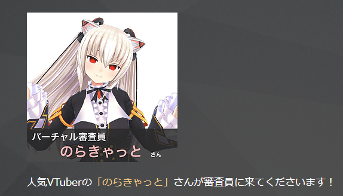
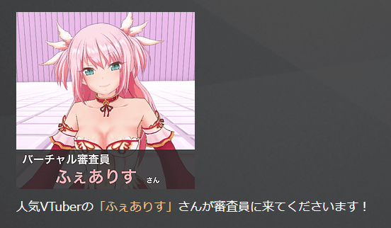
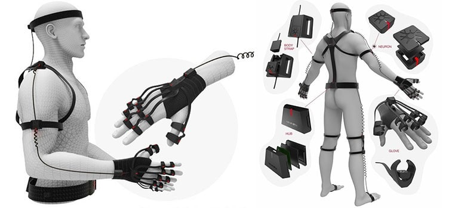
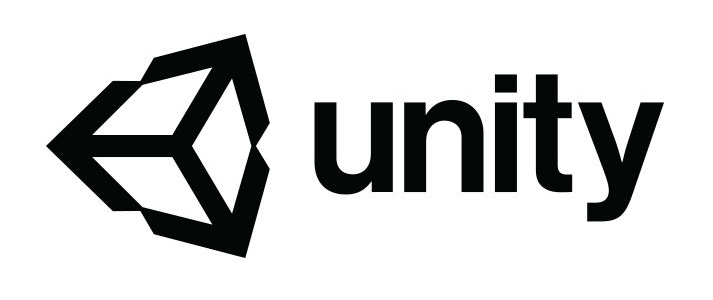

目次
最初に、ハッカソンとはなんぞや？という疑問があると思いますので、説明をします。 簡単に言えば「設定された時間内で作品を作り、それについてプレゼンを行う大会」です（ソフメ向けに言えば春夏でやっている 3DayCreating です）（全部が当てはまるわけではないです）。 ハッカソンという言葉はハック（Hack）とマラソン（Marathon）を合わせた言葉で、名前の通り、開発系のマラソンのようなものです。 なんで私がハッカソンに参加したかというと、先輩に「こういう大会あるんだけど出ない？」と言われ、 「面白そうだし出てみます（何も考えていない）。」という軽い気持ちで参加登録をしました。 参加した気持ちは軽かったですが、今では「あのとき参加しておいて本当に良かった！」と思っています。
それでは、次は千葉 Vtuber ハッカソンの概要を説明します！
千葉 Vtuber ハッカソンでは、チームで力を合わせて２日間で Vtuber 動画を作り、プレゼンを行うというものでした。 Vtuber ハッカソン千葉大会のページ このページを見て下さいと言うのも酷なので、重要な部分だけ抜き出していきます。
1 日目
10:00 受付、入場開始
10:30
開会式
10:50 チーム決め
11:00
ハッカソン開始
19:00 中間発表
22:00
会場閉場
2 日目
10:00 会場開場
17:00
ハッカソン終了・プレゼン開始
18:00 懇親会
19:00
審査結果発表
こうして見ると 2
日無いですね。開始から終了まで 30 時間です。
貸出機材
Vtuber を生み出すための一式は揃っているため、手ぶらでも参加できるくらい貸出機材の用意が良かったです（ありがとうございました！）。
バーチャル審査員

のらきゃっとさん YouTube チャンネル

ふぇありすさん YouTube チャンネル
このお二方、大会直前に発表されたのですが、普段 Vtuber を見ていなかった私でも知っている大御所の方々が審査員として来て下さいました！！！ もちろんバーチャル審査員以外にもリアル審査員の方々がいらっしゃいます。
最優秀賞：1 作品 審査員による審査の結果、最も優秀と認められた作品に送られます。 最優秀チームには 2018 年 12 月 1~2 日に東京で開催されるプレミアム大会への出場権が授与されます。 要するに優勝者は 12 月の東京での決勝大会へ出場できるということです！
自分たちのチーム「けものみち」はマスコットキャラ（？）のみち太郎とアテンドのあんみつおねぇさんの２人組の Vtuber で動画を制作しました。 使った機材、ソフトは以下の通りです。
Perception Neuron

モーションキャプチャーでは、貸出機材の Vive を用いる方法と同じく貸出機材の Perception Neuron を用いる二通りがありましたが、Perception Neuron は事前に少し調べていたのでこちらを用いました。
Unity

チームのプログラマー２人が Unity に触れたことがあったため、使用することにしました。
Aviutl チームメンバーの一人が Aviutl で動画編集の経験があるということで、このソフトを使うことにしました。
TASCAM TS-80 マイクは運営から TASCAM さんのコンデンサーマイクをお借りしました。録音した音声を聞いてみると、確かに違いが分かる、良いマイクでした！
Blender Maya 私達のチームのモデラー２人が別のソフトを使っていたため、それぞれが得意な Blender と Maya を用いました。 Blender 側でみち太郎を、Maya 側であんみつおねぇさんを作成してもらいました！
さてさて、ではチームみち太郎の２日間をお話しましょう！
チーム決め はい、最初にチーム決めですね。 何故かチーム「けものみち」になるメンバー以外、全員チームを組んで来ていたようで、 私達はその場で初対面した野良のチームで参加しました（自分たち以外はチーム組んできていたので、いきなり焦燥感を感じました）。
さて、ここでチームメンバーの紹介をします。
奇跡的に良いバランス！ 自己紹介が終わったら企画会議です。 自分たちのチームはステージ上でのみち太郎ショーになりました。（詳細は中間発表の動画にて） さてさて、ここから Neuron を使ってモーションキャプチャーを取っていきます！ ちなみに私は Neuron 自体ほぼ知りませんでした！事前準備全くしていないのがバレますね！
それでは簡単に、２日間のチームケモノ道の軌跡はこんな感じでした。
1 日目前半 プログラマー 2 人が Perception Neuron の使い方を勉強し始める。 モデラー 2 人がモデルの制作を開始する。 リーダーがシナリオを作り始める。
1 日目中盤 プログラマー２人が PerceptionNeuron がなかなか同期出来ずに焦る。 モデラーであんみつおねぇさんが完成したが、動かしてみるとボーンウェイトがおかしかったため修正を始める。 シナリオの大筋が完成し、絵コンテを作る。
1 日目終盤 プログラマーが PerceptionNeuron での同期に成功する！ モデラーでみち太郎が完成するが、こちらも動かすとボーンウェイトが変だったため、修正を始める。 音声素材のリストを作る。 企画発表用の資料を作成。
企画発表会とは、１日目の終わりに行う発表で、自分たちがどんな Vtuber を作るか、１日目で何を作ったのか、等を発表する会です。 動画全体はこちら！
Italang-Mong 一番目の発表で高品質な 3D フォールドを見せて会場の度肝を抜く！
SCLAB 360 動画、バ筋肉！
Shall I dance Unity ちゃんと社交ダンス
すいはんき工房 リアル Youtuber
VR プレゼンテーション、きずな あいまいちゃん！
全６チームの企画発表会が終わり、１日目の会場での活動は終了です！ 各チーム閉場までに会場を出て帰路につきました。
2 日目前半 開場してすぐに私達のチームは集まり作業をはじめました。 プログラマーが残ったモーションを取る。 モデラーがモデルの修正を行う。 リーダーが進捗管理と動画編集。
2 日目後半 あんみつおねぇさんにモーションを適応することが出来なかったため、みち太郎にだけモーションを適応し撮影。 モデラーがモデルを完成。 リーダーが動画制作と発表スライド作成。
2 日目終了、そして発表へ…。
それでは、注釈をつけていた問題点を ハッカソン中に一体どんな問題が起こったのでしょうか！？
Neuron を着て Axis Neuron(Neuron のソフト)での動作確認ができなかった！
これで数時間悩みました。どこにも書いていなかったのですが（調べた限り）設定を変更するとハードとソフトが同期しました！ 解決！
Neuron でモーションを取れるようになったけど、微妙にアニメーションがおかしい！ 普通に歩いているのに足がクロスしたり、腕の方向が変に曲がっているという問題が発生。
周囲の磁気等の影響かと思い、違う階で行ってもこれは治りませんでした。 これに関しては致命的ではなかったので、このまま続行することにしました。
Unity にモーションを同期させようとすると回転座標系の値がおかしい。
いざ Unity へモーションを同期させようとすると大変なことが起こりました。自分たちのみち太郎とあんみつおねぇさんは Neuron のデータを受け取れるモデルではなかったため、座標が荒ぶってしまいました！これはまずいといろいろ調べ、某ブログ（「Neuron Unity 座標」で調べれば出てきます）で使われているスクリプトを組み込んで対応しようとしました。 みち太郎は対応できましたが、あんみつおねぇさんにスクリプトをつけるとエラーを出して実行できなかったため、あんみつおねぇさんに Neuron のアニメーションを付けるのは諦める事にしました。 あんみつおねぇさんは適当にモデルを動かしポーズを取らせた状態で体全体を左右にふることで動いている感を出すことにしました。 ハッカソンでは完成度を高めることより完成させることが大事！！！いやほんとに。
Loilo での撮影の失敗。 Unity で作ってカメラの映像を動画にしようと思い、Loilo ゲームレコーダーを用いて Unity を直接録画したら、録画した映像の画面が点滅してしまいました。
時間もなかったので、exe を出してそこで録画をしました。Exe にするのに時間がかかりますし、カメラ位置の調整スクリプトを書いていなかったので、撮影に黒いすることになりました。
プログラムの方で起きた問題はこの４点でした。問題点３を除きとりあえずは解決できました。モデラーさんの方では１日目から動かしたときのアニメーションの修正で、ウェイト調整を終始頑張っていたように思えます。お疲れ様です！
さてさて、こうして撮影を終えた私達は晴れて発表の場に立ちます。 https://youtu.be/SJzVTFL54hc?t=3860 （私達のチームから始まりますが、巻き戻せば他のチームも見れるのでぜひ見て下さい！） （バ筋肉！！！ と きずなあいまいちゃん が今でも覚えている位印象強い。）
6 チームとも皆強みを持っているので、誰が優勝するのか分からなかったです。 https://www.youtube.com/watch?v=rn3WeC5hViQ
3 位 チーム SCLAB バ筋肉
2 位 チームすいはんき工房 リアル YouTuber が VTuber になってみた
1 位 チーム ケモノミチ ゆるキャラ VTuber みち太郎
となりました！ そうです。私達のケモノミチが優勝しました！！！ 動画後半では審査員の方々からの総評を頂いております。 バーチャル審査員としてフェアリスさんとのらきゃっとさんからも総評をいただきました！ 残念ながら動画ではのらきゃっとさんの部分はカットされていますが、のらきゃっとさんは「きずな あいまいちゃん」をネタにしまくっていました（このせいでカットとかされたわけじゃない……ですよね？）。
さてさて、優勝したら何がもらえるのか。 そうです！東京大会への出場権を頂きました。 というわけで次回は 12/1,2 で開催された東京大会です！